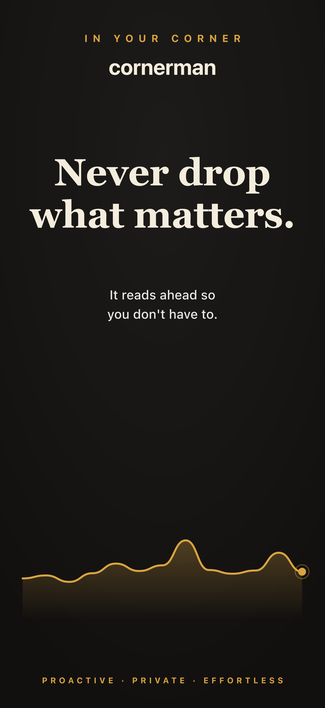
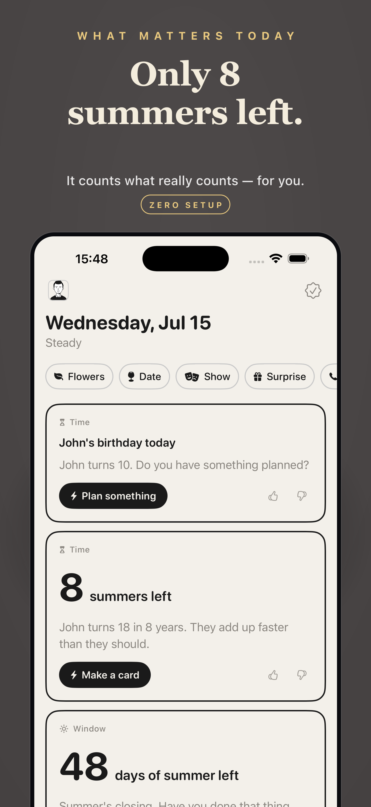
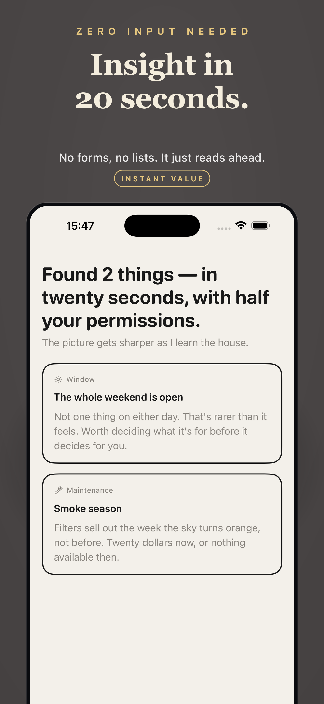
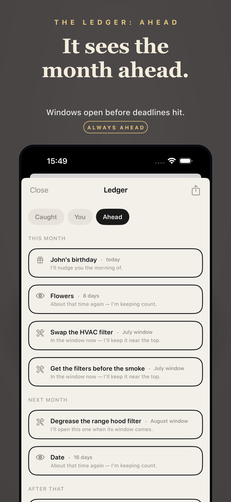

<!DOCTYPE html>
<html lang="en" data-theme="dark">
<head>
  <meta charset="utf-8" />
  <meta name="viewport" content="width=device-width, initial-scale=1" />
  <title>Cornerman: Dad’s Assistant — Never Miss What Matters Most | iOS App</title>
  <meta name="description" content="Cornerman is the anticipation engine for dads. It quietly reads your calendar, contacts, and location — with zero setup — and warns you before something important slips through. No lists. No guilt." />
  <meta name="keywords" content="dad assistant, family app, iOS lifestyle app, smart reminders, calendar assistant, dad app, anticipation engine, family life, parenting app, on-device AI" />
  <meta name="author" content="umay.dev" />
  <meta name="creator" content="umay.dev" />
  <meta name="publisher" content="umay.dev" />
  <meta name="robots" content="index, follow, max-snippet:-1, max-image-preview:large" />
  <link rel="icon" href="../assets/favicon.png" />
  <link rel="canonical" href="https://umay.dev/cornerman/" />

  <!-- Open Graph -->
  <meta property="og:type" content="website" />
  <meta property="og:title" content="Cornerman: Dad’s Assistant — Never Miss What Matters Most" />
  <meta property="og:description" content="The anticipation engine for dads. Zero setup — it reads your calendar, contacts and location and warns you before things slip." />
  <meta property="og:url" content="https://umay.dev/cornerman/" />
  <meta property="og:image" content="https://umay.dev/cornerman/icon.png" />
  <meta property="og:site_name" content="umay.dev" />

  <!-- Twitter -->
  <meta name="twitter:card" content="summary_large_image" />
  <meta name="twitter:title" content="Cornerman: Dad’s Assistant" />
  <meta name="twitter:description" content="The anticipation engine for dads. Zero setup — it warns you before things slip." />
  <meta name="twitter:image" content="https://umay.dev/cornerman/icon.png" />
  <meta name="twitter:site" content="@yumaydev" />
  <meta name="twitter:creator" content="@yumaydev" />

  <!-- Structured Data: MobileApplication -->
  <script type="application/ld+json">
  {
    "@context": "https://schema.org",
    "@type": "MobileApplication",
    "name": "Cornerman: Dad's Assistant",
    "operatingSystem": "iOS",
    "applicationCategory": "LifestyleApplication",
    "description": "The anticipation engine for dads. Cornerman quietly reads your calendar, contacts, and location \u2014 with zero input from you \u2014 and warns you before you drop something important. All on-device. No accounts.",
    "offers": {
      "@type": "Offer",
      "price": "0",
      "priceCurrency": "USD"
    },
    "author": {
      "@type": "Organization",
      "name": "umay.dev",
      "url": "https://umay.dev",
      "sameAs": [
        "https://x.com/yumaydev",
        "https://www.instagram.com/umay.dev"
      ]
    },
    "url": "https://apps.apple.com/app/id6789925474",
    "datePublished": "2026-07-15"
  }
  <\/script>

  <!-- Structured Data: BreadcrumbList -->
  <script type="application/ld+json">
  {
    "@context": "https://schema.org",
    "@type": "BreadcrumbList",
    "itemListElement": [
      { "@type": "ListItem", "position": 1, "name": "Home", "item": "https://umay.dev/" },
      { "@type": "ListItem", "position": 2, "name": "Cornerman", "item": "https://umay.dev/cornerman/" }
    ]
  }
  <\/script>

  <!-- Structured Data: FAQPage -->
  <script type="application/ld+json">
  {
    "@context": "https://schema.org",
    "@type": "FAQPage",
    "mainEntity": [
      {
        "@type": "Question",
        "name": "Do I need to set anything up?",
        "acceptedAnswer": {
          "@type": "Answer",
          "text": "No setup required. Grant the permissions on first launch and Cornerman does the rest. No lists to create, no categories to build, no habits to maintain."
        }
      },
      {
        "@type": "Question",
        "name": "Which permissions does Cornerman need and why?",
        "acceptedAnswer": {
          "@type": "Answer",
          "text": "Cornerman requests access to your Calendar (to find upcoming events), Contacts (to recognise the people who matter to you), and Location (to factor in where you are). All three stay on your device."
        }
      },
      {
        "@type": "Question",
        "name": "Does Cornerman send my data anywhere?",
        "acceptedAnswer": {
          "@type": "Answer",
          "text": "No. All inference runs entirely on-device. Your calendar, contacts, and location data are never sent to a server and are never used to profile you."
        }
      },
      {
        "@type": "Question",
        "name": "Will it send me constant notifications?",
        "acceptedAnswer": {
          "@type": "Answer",
          "text": "No. Cornerman stays silent when everything is under control. It only surfaces a nudge when it detects a genuine conflict or approaching deadline that needs your attention."
        }
      }
    ]
  }
  <\/script>

  <style>
    *, *::before, *::after { box-sizing: border-box; margin: 0; padding: 0; }

    :root {
      --bg:      #0d0d0f;
      --bg2:     #141416;
      --bg3:     #1c1c1f;
      --border:  #2a2a2e;
      --text:    #f0f0f2;
      --muted:   #88888f;
      --accent:  #e8834a;
      --radius:  18px;
      --max:     860px;
    }

    html { scroll-behavior: smooth; }

    body {
      background: var(--bg);
      color: var(--text);
      font-family: -apple-system, BlinkMacSystemFont, "Segoe UI", Helvetica, Arial, sans-serif;
      font-size: 17px;
      line-height: 1.65;
      -webkit-font-smoothing: antialiased;
    }

    a { color: var(--accent); text-decoration: none; }
    a:hover { text-decoration: underline; }

    .wrap {
      max-width: var(--max);
      margin: 0 auto;
      padding: 0 24px;
    }

    section { padding: 72px 0; }
    section + section { border-top: 1px solid var(--border); }

    /* NAV */
    nav {
      padding: 18px 24px;
      display: flex;
      align-items: center;
      justify-content: space-between;
      border-bottom: 1px solid var(--border);
    }
    .nav-brand { font-size: 14px; color: var(--muted); letter-spacing: .04em; }
    .nav-brand a { color: var(--muted); }
    .nav-brand a:hover { color: var(--text); text-decoration: none; }

    /* HERO */
    .hero { padding: 80px 0 64px; text-align: center; }
    .hero-icon {
      width: 120px;
      height: 120px;
      border-radius: 28px;
      box-shadow: 0 8px 40px rgba(0,0,0,.55);
      margin-bottom: 28px;
    }
    .hero h1 {
      font-size: clamp(30px, 6vw, 46px);
      font-weight: 700;
      letter-spacing: -.025em;
      line-height: 1.1;
      margin-bottom: 6px;
    }
    .hero .app-sub {
      font-size: clamp(14px, 2.5vw, 17px);
      color: var(--muted);
      letter-spacing: .02em;
      margin-bottom: 18px;
      font-weight: 400;
    }
    .hero .tagline {
      font-size: clamp(18px, 3.5vw, 23px);
      color: var(--text);
      opacity: .82;
      margin-bottom: 38px;
      max-width: 500px;
      margin-left: auto;
      margin-right: auto;
    }
    .badge-link {
      display: inline-flex;
      align-items: center;
      gap: 11px;
      background: var(--text);
      color: #0d0d0f;
      border-radius: 13px;
      padding: 12px 22px;
      font-size: 15px;
      font-weight: 600;
      transition: opacity .15s;
      text-decoration: none;
    }
    .badge-link:hover { opacity: .86; text-decoration: none; }
    .badge-link svg { width: 24px; height: 24px; flex-shrink: 0; }
    .badge-text { text-align: left; }
    .badge-sub  { display: block; font-size: 11px; font-weight: 400; opacity: .65; line-height: 1; margin-bottom: 2px; }
    .badge-main { display: block; font-size: 17px; font-weight: 700; line-height: 1.1; }

    /* INTRO */
    .intro { padding-top: 0; padding-bottom: 72px; text-align: center; }
    .intro p {
      font-size: clamp(18px, 3vw, 22px);
      color: var(--muted);
      max-width: 640px;
      margin: 0 auto;
      line-height: 1.75;
    }
    .intro strong { color: var(--text); font-weight: 600; }

    /* FEATURES */
    .features h2 {
      font-size: clamp(22px, 4vw, 32px);
      font-weight: 700;
      letter-spacing: -.02em;
      margin-bottom: 36px;
      text-align: center;
    }
    .features-grid {
      display: grid;
      grid-template-columns: repeat(auto-fit, minmax(260px, 1fr));
      gap: 18px;
    }
    .feature-card {
      background: var(--bg2);
      border: 1px solid var(--border);
      border-radius: var(--radius);
      padding: 28px 24px;
    }
    .feature-card .icon { font-size: 30px; margin-bottom: 14px; }
    .feature-card h3 {
      font-size: 17px;
      font-weight: 600;
      margin-bottom: 8px;
      letter-spacing: -.01em;
    }
    .feature-card p { font-size: 15px; color: var(--muted); line-height: 1.6; }

    /* SCREENSHOTS */
    .screenshots { text-align: center; overflow: hidden; }
    .screenshots h2 {
      font-size: clamp(22px, 4vw, 32px);
      font-weight: 700;
      letter-spacing: -.02em;
      margin-bottom: 36px;
    }
    .screenshots-row {
      display: flex;
      gap: 16px;
      overflow-x: auto;
      padding-bottom: 8px;
      justify-content: center;
      -webkit-overflow-scrolling: touch;
      scrollbar-width: none;
    }
    .screenshots-row::-webkit-scrollbar { display: none; }
    .screenshots-row::before,
    .screenshots-row::after {
      content: '';
      flex-shrink: 0;
      width: 8px;
    }
    .ss-item { flex-shrink: 0; width: 170px; }
    .ss-item img {
      width: 100%;
      border-radius: 14px;
      box-shadow: 0 4px 28px rgba(0,0,0,.55);
      display: block;
    }
    @media (min-width: 680px) { .ss-item { width: 200px; } }

    /* PRIVACY */
    .privacy { background: var(--bg2); }
    .privacy .inner {
      display: flex;
      gap: 36px;
      align-items: flex-start;
    }
    .privacy-icon { font-size: 46px; flex-shrink: 0; padding-top: 2px; }
    .privacy h2 {
      font-size: clamp(20px, 3.5vw, 28px);
      font-weight: 700;
      letter-spacing: -.02em;
      margin-bottom: 12px;
    }
    .privacy p { font-size: 16px; color: var(--muted); line-height: 1.75; max-width: 560px; }
    @media (max-width: 520px) {
      .privacy .inner { flex-direction: column; gap: 18px; }
    }

    /* SUPPORT */
    .support h2 {
      font-size: clamp(22px, 4vw, 32px);
      font-weight: 700;
      letter-spacing: -.02em;
      margin-bottom: 32px;
    }
    .faq-list { list-style: none; display: flex; flex-direction: column; gap: 16px; }
    .faq-item {
      background: var(--bg2);
      border: 1px solid var(--border);
      border-radius: var(--radius);
      padding: 22px 24px;
    }
    .faq-item h3 { font-size: 16px; font-weight: 600; margin-bottom: 8px; }
    .faq-item p { font-size: 15px; color: var(--muted); line-height: 1.6; }
    .support-contact {
      margin-top: 28px;
      padding: 20px 24px;
      background: var(--bg3);
      border: 1px solid var(--border);
      border-radius: var(--radius);
      font-size: 15px;
      color: var(--muted);
    }

    /* FOOTER */
    footer {
      padding: 36px 0;
      border-top: 1px solid var(--border);
      text-align: center;
    }
    .footer-links {
      display: flex;
      flex-wrap: wrap;
      gap: 14px 28px;
      justify-content: center;
      margin-bottom: 14px;
    }
    .footer-links a { font-size: 14px; color: var(--muted); }
    .footer-links a:hover { color: var(--text); text-decoration: none; }
    .footer-copy { font-size: 13px; color: var(--muted); opacity: .5; }
  </style>
</head>
<body>

  <nav>
    <span class="nav-brand"><a href="https://umay.dev">umay.dev</a></span>
  </nav>

  <!-- HERO -->
  <section class="hero">
    <div class="wrap">
      
      <h1>Cornerman</h1>
      <p class="app-sub">Dad’s Assistant</p>
      <p class="tagline">Never miss what matters most</p>
      <a href="https://apps.apple.com/app/id6789925474" class="badge-link">
        <svg viewBox="0 0 24 24" fill="currentColor" xmlns="http://www.w3.org/2000/svg" aria-hidden="true">
          <path d="M18.71 19.5c-.83 1.24-1.71 2.45-3.05 2.47-1.34.03-1.77-.79-3.29-.79-1.53 0-2 .77-3.27.82-1.31.05-2.3-1.32-3.14-2.53C4.25 17 2.94 12.45 4.7 9.39c.87-1.52 2.43-2.48 4.12-2.51 1.28-.02 2.5.87 3.29.87.78 0 2.26-1.07 3.8-.91.65.03 2.47.26 3.64 1.98-.09.06-2.17 1.28-2.15 3.81.03 3.02 2.65 4.03 2.68 4.04-.03.07-.42 1.44-1.38 2.83M13 3.5c.73-.83 1.94-1.46 2.94-1.5.13 1.17-.34 2.35-1.04 3.19-.69.85-1.83 1.51-2.95 1.42-.15-1.15.41-2.35 1.05-3.11z"/>
        </svg>
        <span class="badge-text">
          <span class="badge-sub">Download on the</span>
          <span class="badge-main">App Store</span>
        </span>
      </a>
    </div>
  </section>

  <!-- INTRO -->
  <section class="intro">
    <div class="wrap">
      <p>Between work, kids, and everything in between, dads carry an invisible mental load. Cornerman quietly reads your calendar, contacts, and location — <strong>with zero setup from you</strong> — and taps you on the shoulder before something important slips through the cracks.</p>
    </div>
  </section>

  <!-- FEATURES -->
  <section class="features">
    <div class="wrap">
      <h2>Your corner, working for you</h2>
      <div class="features-grid">
        <div class="feature-card">
          <div class="icon">⏰</div>
          <h3>Sees it before you do</h3>
          <p>Cornerman spots conflicts and important dates early enough that you can actually act — not five minutes before it’s too late.</p>
        </div>
        <div class="feature-card">
          <div class="icon">🔗</div>
          <h3>Connects the dots automatically</h3>
          <p>It cross-references your schedule, the people in your life, and where you are. The school event colliding with your late meeting? Already flagged.</p>
        </div>
        <div class="feature-card">
          <div class="icon">🤫</div>
          <h3>Silent when it doesn’t need to speak</h3>
          <p>No stream of reminders. No noise. Cornerman stays quiet when everything is under control and only speaks up when it genuinely matters.</p>
        </div>
        <div class="feature-card">
          <div class="icon">📈</div>
          <h3>Learns your family’s rhythm</h3>
          <p>Cornerman gets sharper the longer you use it, adapting to the patterns of your actual family life — entirely on your device.</p>
        </div>
      </div>
    </div>
  </section>

  <!-- SCREENSHOTS -->
  <section class="screenshots">
    <div class="wrap">
      <h2>See it in action</h2>
    </div>
    <div class="screenshots-row">
      <div class="ss-item"></div>
      <div class="ss-item"></div>
      <div class="ss-item"></div>
      <div class="ss-item"></div>
    </div>
  </section>

  <!-- PRIVACY -->
  <section class="privacy">
    <div class="wrap">
      <div class="inner">
        <div class="privacy-icon">🔒</div>
        <div>
          <h2>Your data stays in your corner</h2>
          <p>Cornerman knows a lot about your life — and keeps it entirely to itself. All inference runs on-device. Your calendar, contacts, and location are never sent to a server, never used to build a profile, and never shared with anyone. It’s an app that watches out for you without watching over you.</p>
        </div>
      </div>
    </div>
  </section>

  <!-- SUPPORT -->
  <section id="support" class="support">
    <div class="wrap">
      <h2>Support</h2>
      <ul class="faq-list">
        <li class="faq-item">
          <h3>Do I need to set anything up?</h3>
          <p>No setup required. Grant the permissions on first launch and Cornerman takes it from there. No lists to create, no categories to configure, no habits to build.</p>
        </li>
        <li class="faq-item">
          <h3>Which permissions does it need and why?</h3>
          <p>Cornerman requests access to your Calendar (to detect upcoming events and conflicts), Contacts (to recognise the people who matter to you), and Location (to factor in where you are). All three stay on your device.</p>
        </li>
        <li class="faq-item">
          <h3>Will it send me constant notifications?</h3>
          <p>No. Cornerman stays quiet when things are under control. It nudges you only when it detects a genuine conflict or deadline that actually needs your attention.</p>
        </li>
        <li class="faq-item">
          <h3>Does it upload my data anywhere?</h3>
          <p>Never. Everything runs on-device. Your calendar, contacts, and location are not sent to any server. No account is required and no data leaves your phone.</p>
        </li>
      </ul>
      <div class="support-contact">
        Questions, feedback, or bug reports → <a href="mailto:experlercom@gmail.com">experlercom@gmail.com</a>
      </div>
    </div>
  </section>

  <!-- FOOTER -->
  <footer>
    <div class="wrap">
      <div class="footer-links">
        <a href="https://umay.dev">umay.dev</a>
        <a href="https://umay.dev/cornerman-privacy-policy.html">Privacy Policy</a>
        <a href="https://umay.dev/cornerman-terms-of-use.html">Terms of Use</a>
      </div>
      <p class="footer-copy">&copy; 2026 umay.dev. All rights reserved.</p>
    </div>
  </footer>

</body>
</html>